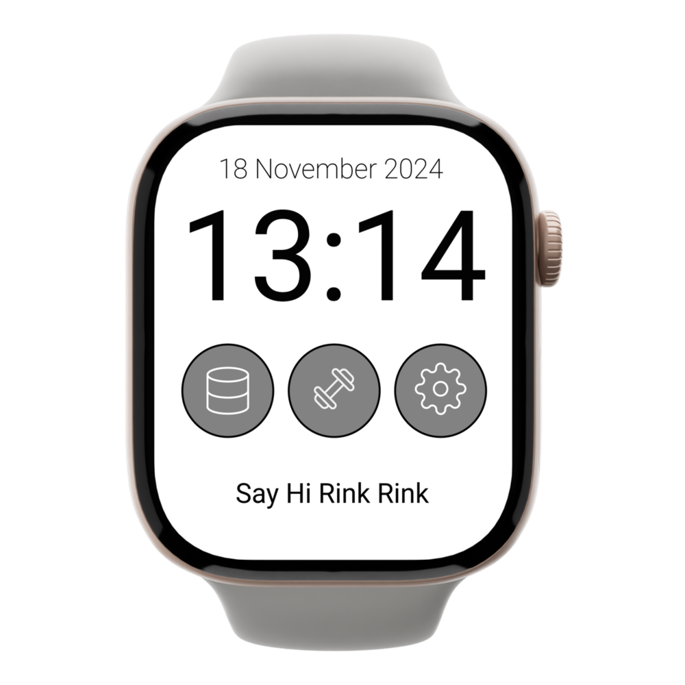
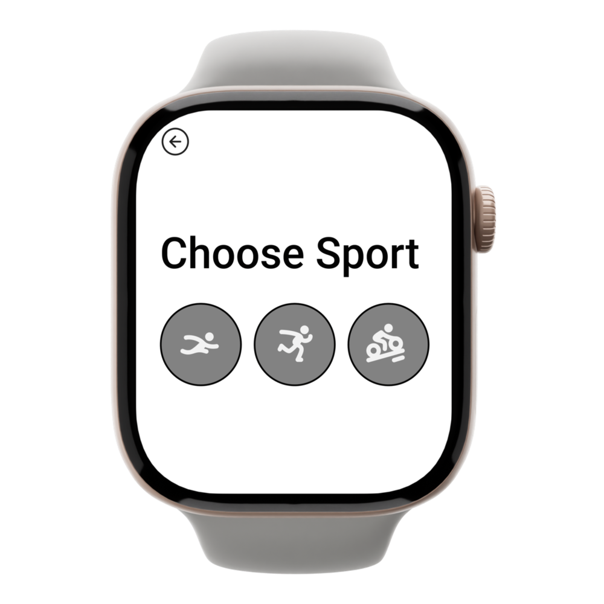
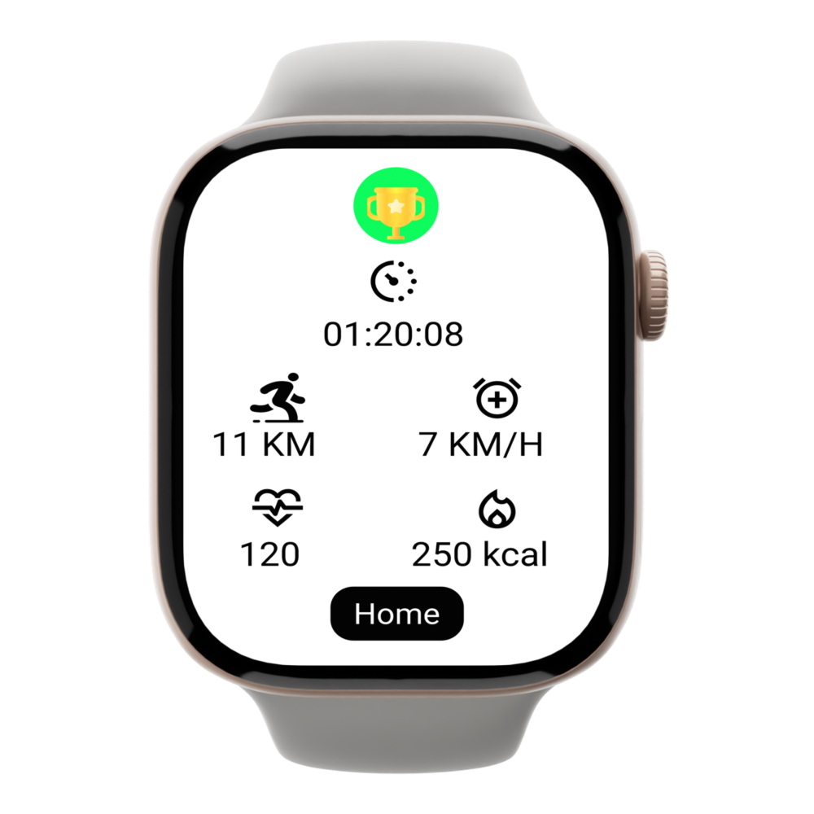
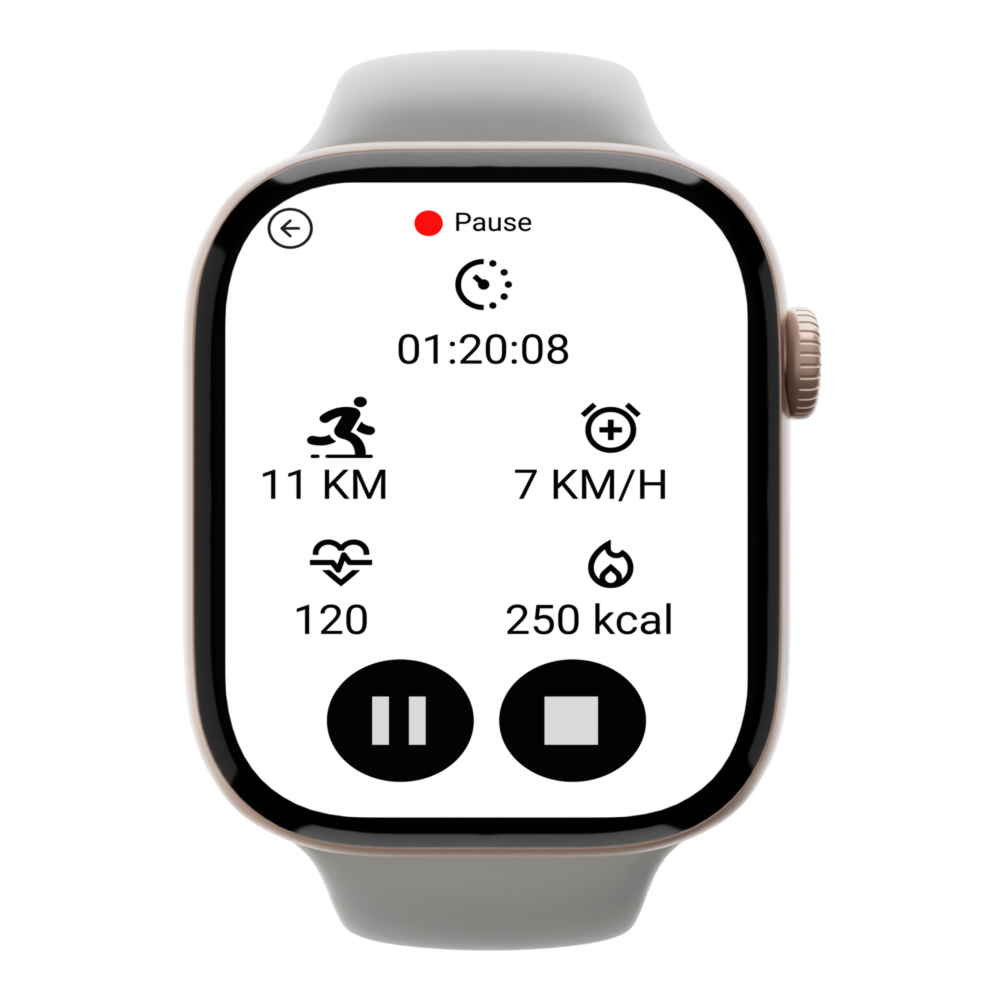
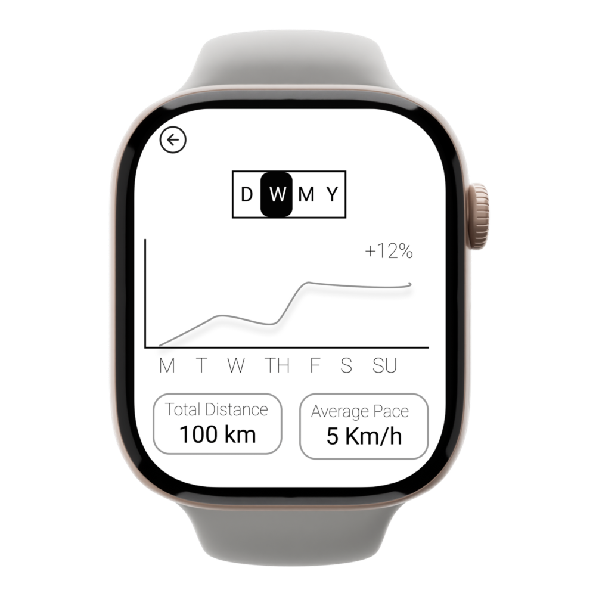
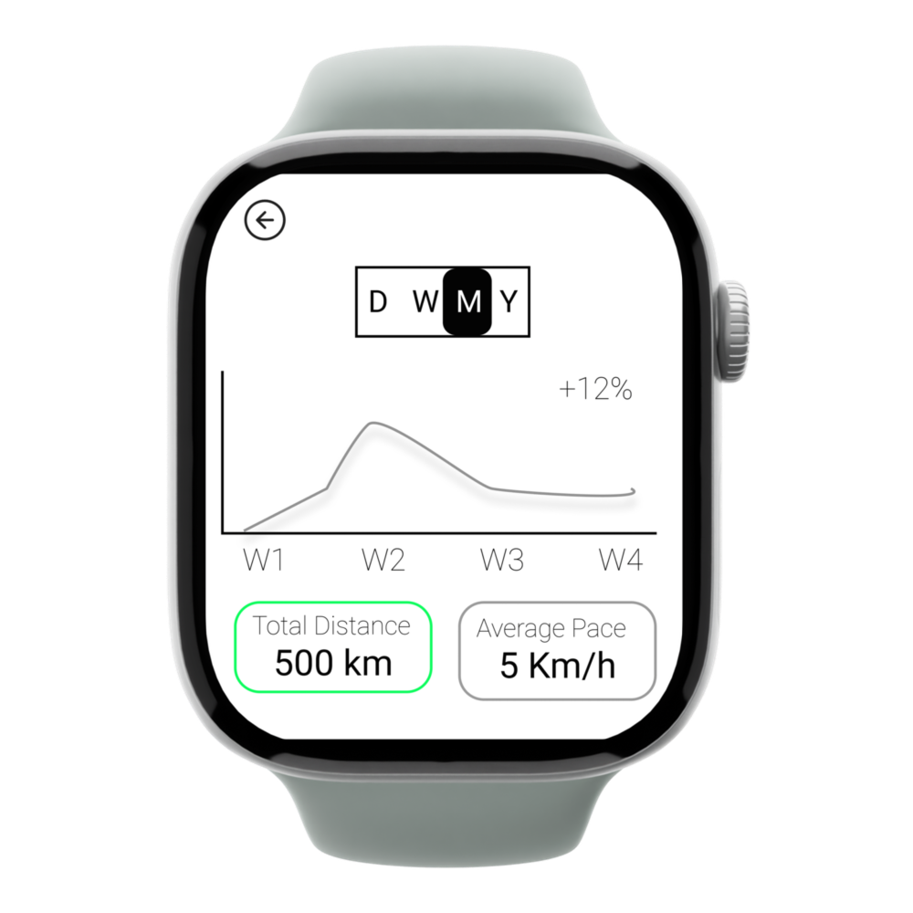

First Iteration
The goal here was to allow the user to get to wherever they want to in the app as fast and effectively as possible. The speed wasn't limited to the actual time but rather also its visual perception, which I achieved by utilizing smooth animations that are pleasant for the eye.Furthermore, I tried to limit the text as much as possible and use recognizable icons that convey the meaning without words since its a design for a smart watch.





Testing
I tested the prototype with five students, focusing on four questions: Are icons clear? Is the layout aligned with user priorities? How efficiently can users complete tasks?
Positive feedback: Clear visual cues (red/green dots for running or pausing), intuitive interface, and smooth navigation.
Suggestions: The Statistics icon caused slight hesitation, the weight icon didn’t reflect the app’s running focus, and the graph’s meaning (distance, heart rate, or pace) was unclear.
Second Iteration
I updated the main page icons based on user feedback. The statistics icon now has a more recognizable graph icon, and the weight icon was replaced with an icon of a person preparing to run, based on suggestions for a better representation in a running app.The graph's purpose is now clear, and the user can select options marked in green, which addresses the feedback from test subjects about unclear representations.


Reflection
This project provided me with great opportunity to designe for a small screen for the first time. During that week I had to balance between the clarity of information with readability, and hence I improved my ability to convey messages without use of text.